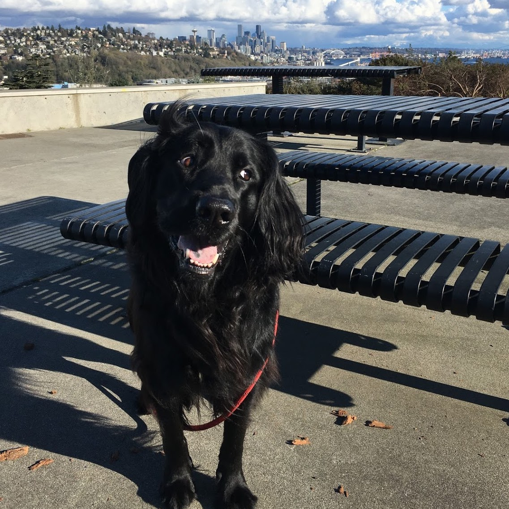
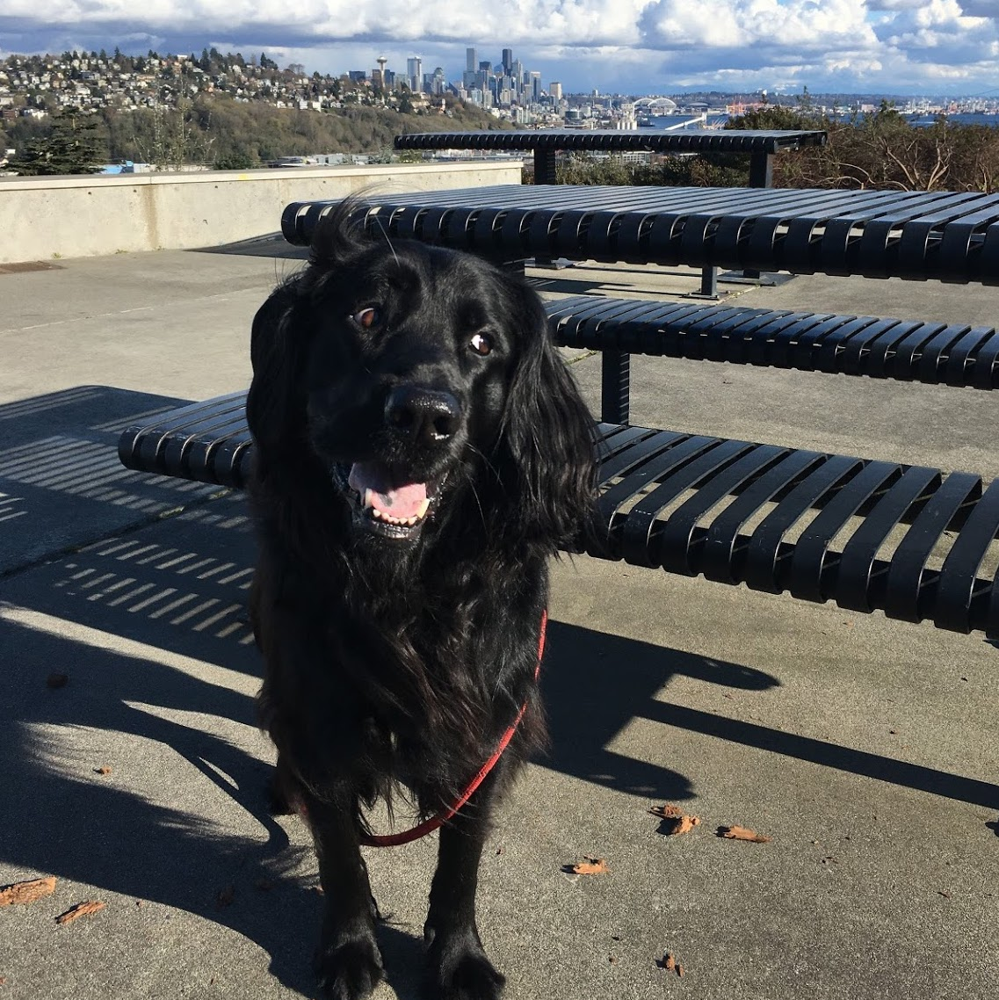

About Me
Hello and thank you for visiting my site! I was born and raised in Chicago, but have fallen in love with the PNW since moving out here in the fall of 2014. By trade, I'm a design and test engineer for full scale aircraft testing, but I am shifting focus to a career in web development.
Outside of work, you can find me spending time outside with my husband and our dog. We love taking quick day hikes through Discovery Park in Seattle, and sailing out on the Puget Sound (when it's not raining too much). Anything that gets us moving and in the sun is a plus! I am also a big fan of Crossfit and have found a great community at the local gym. Over the next 6 months as I learn more about becoming a web developer, I'm hoping to bring my drive, passion, and knowledge into this new career as I continue to grow and learn.


Projects


Dog Days
This is my dog, Bentley. He is a flat-coated retriever, is extremly friendly, and always up for an adventure. He is a huge part of my life, so I couldn't miss an opportunity to share the joy.
 
